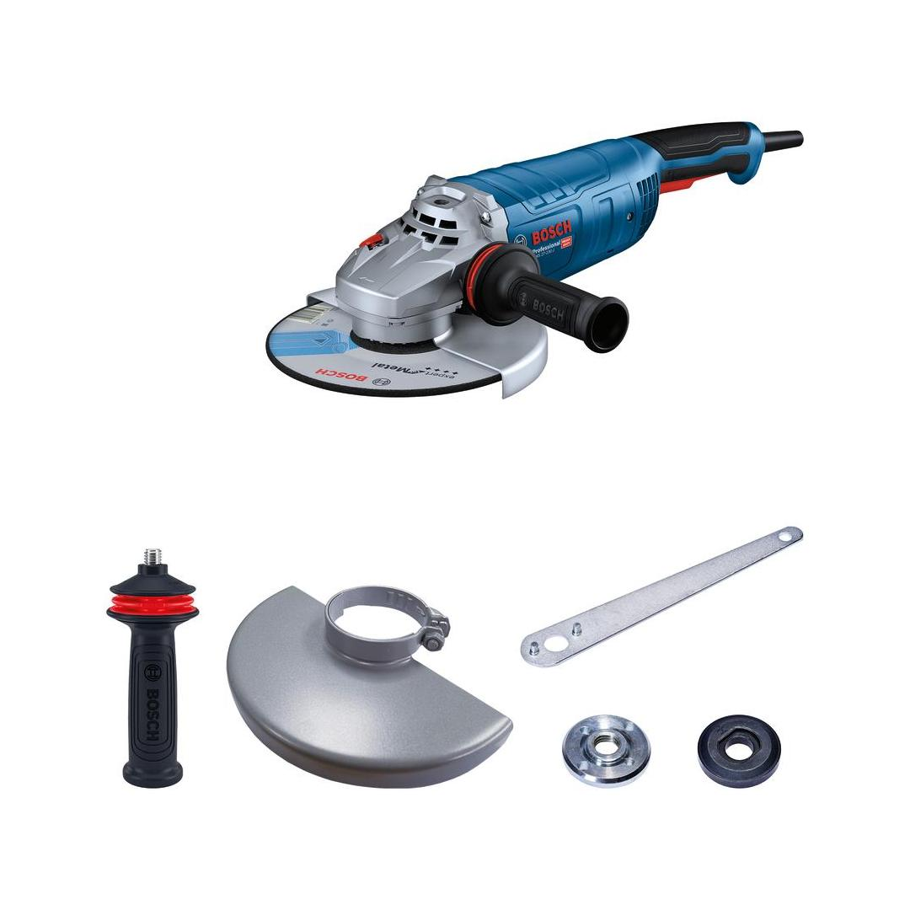
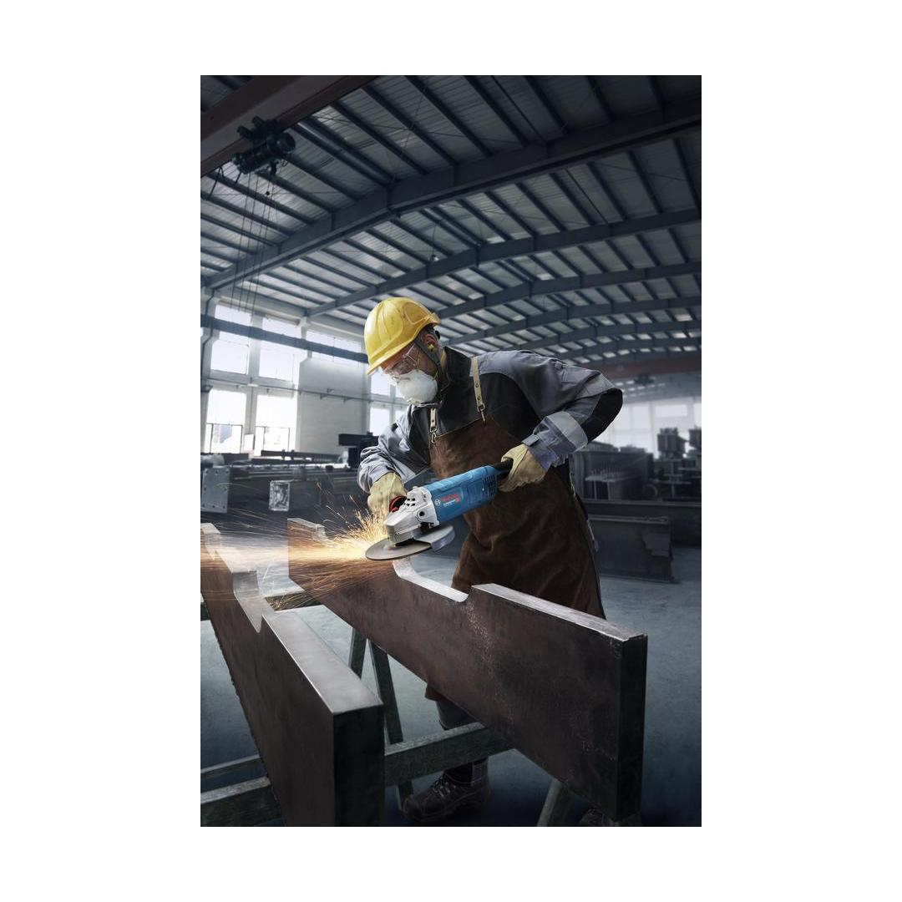
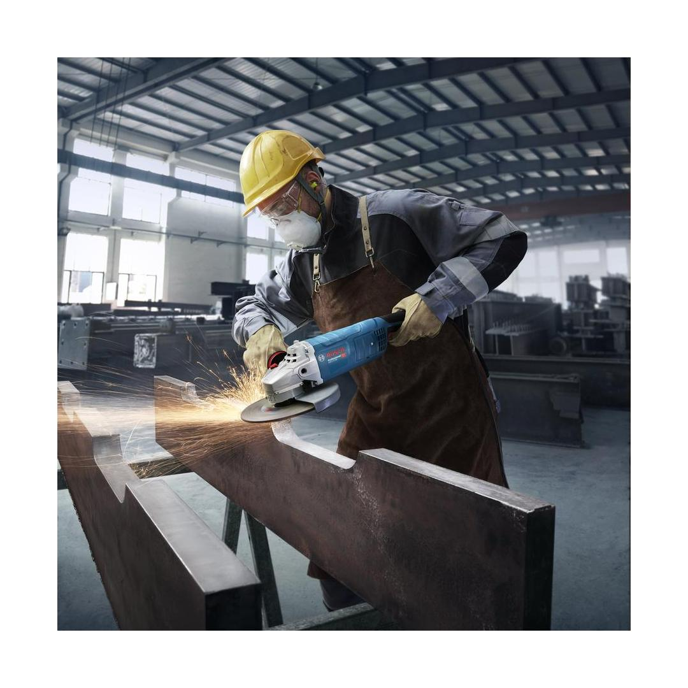
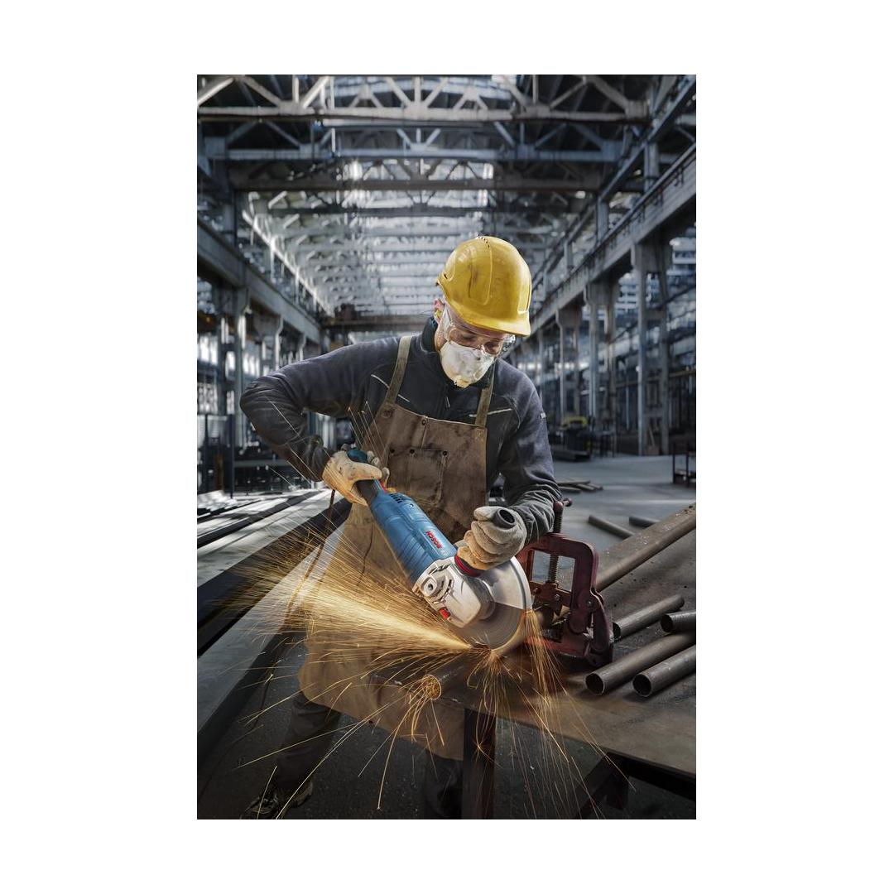
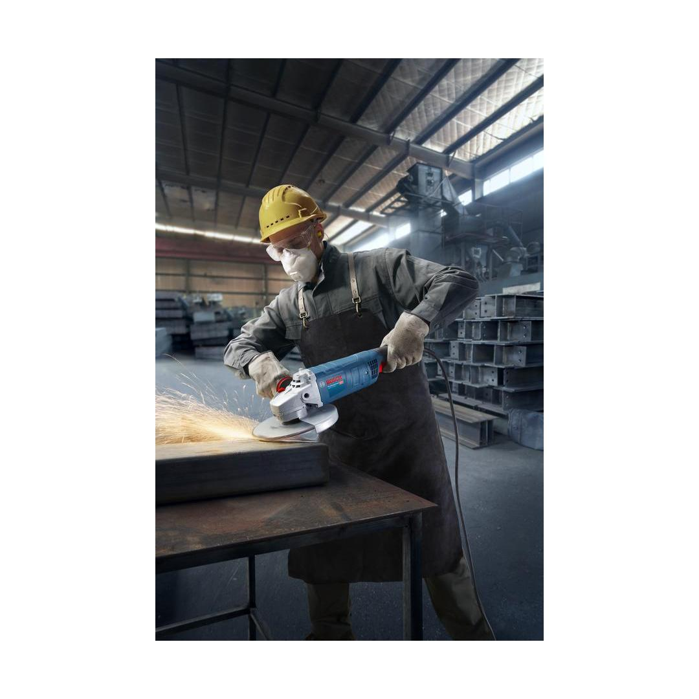
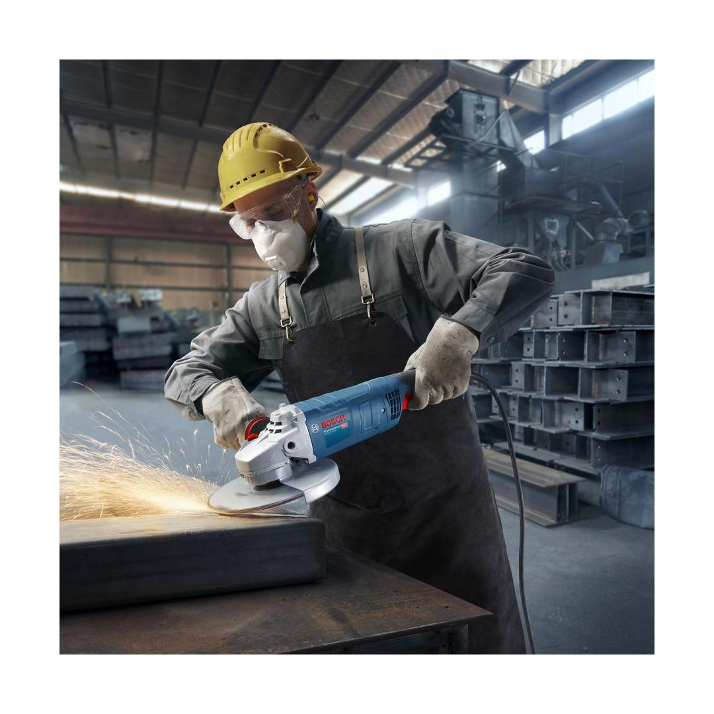
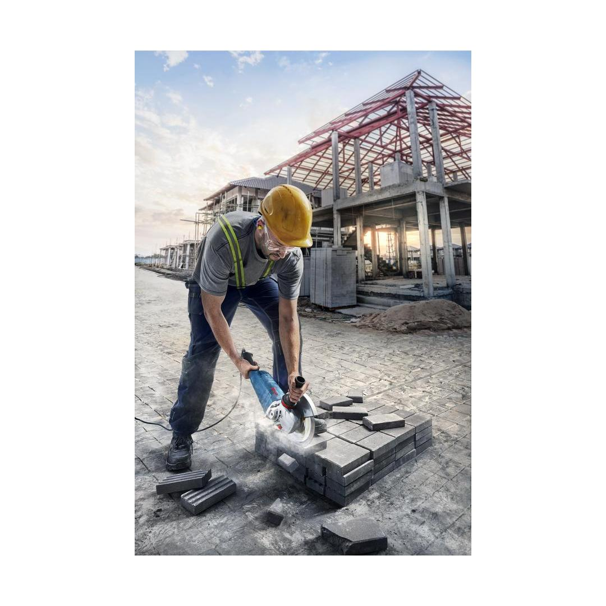
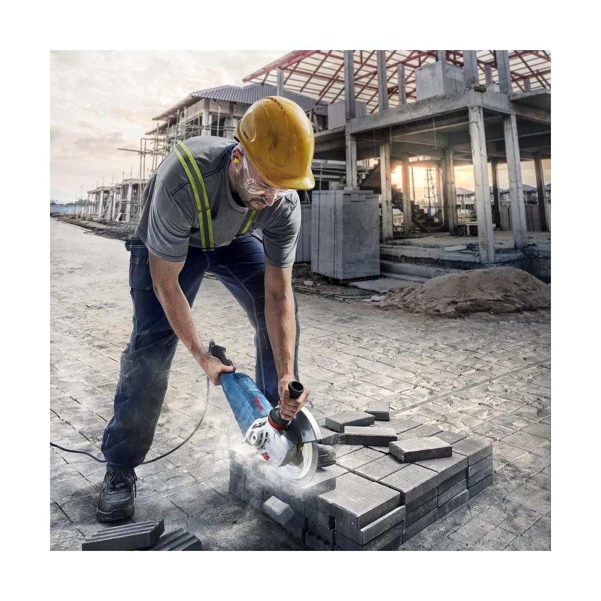

06018C5320










| Noise level |
The A-rated noise level of the power tool is typically as follows: Sound pressure level 93 dB(A); Sound power level 104 dB(A). Uncertainty K= 3 dB. |
| Voltage, electrical |
230 V |
| Rated input power |
2,700 W |
| No-load speed |
5,800 – 6,500 rpm |
| Grinding spindle thread |
M14 |
| Main handle |
Rattail |
| Disc diameter |
230 mm |
| Wire cup brush, diameter |
100 mm |
| Cup wheel, diameter |
110 mm |
| Bore size, diameter |
22.23 mm |
| Tool dimensions (width) |
334 mm |
| Tool dimensions (length) |
480 mm |
| Tool dimensions (height) |
138 mm |
| Weight |
6.000 kg |
| Switch |
Lockable Switch |
| X-LOCK |
No |
Mighty 2,700W large angle grinder made for tough applications.
Slow cutting and grinding speeds compromise your performance, efficiency, and precision. That’s why the Bosch GWS 27-230 J Professional has a very powerful 2,700 W motor, so you tackle really challenging jobs in a short time. You’ll appreciate the sustained high performance of this tool, especially when using a high torque to do heavy-duty grinding or cutting in concrete or metal. That’s because the high-powered motor outclasses the rest in strength and extreme overload capacity. Combined with the safety and convenience provided by Soft Start and Restart Protection features you'll have an exceptional tool. Maintenance is no problem either: this tool has interchangeable components with other large angle grinders from Bosch so you can repair it easily and get quickly back to work.
As a metal worker, engineering, or construction professional, you’ll find this tool is first class for cutting and grinding metal, concrete, and stone.